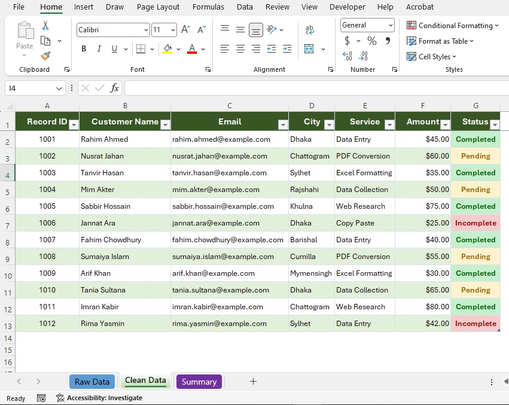
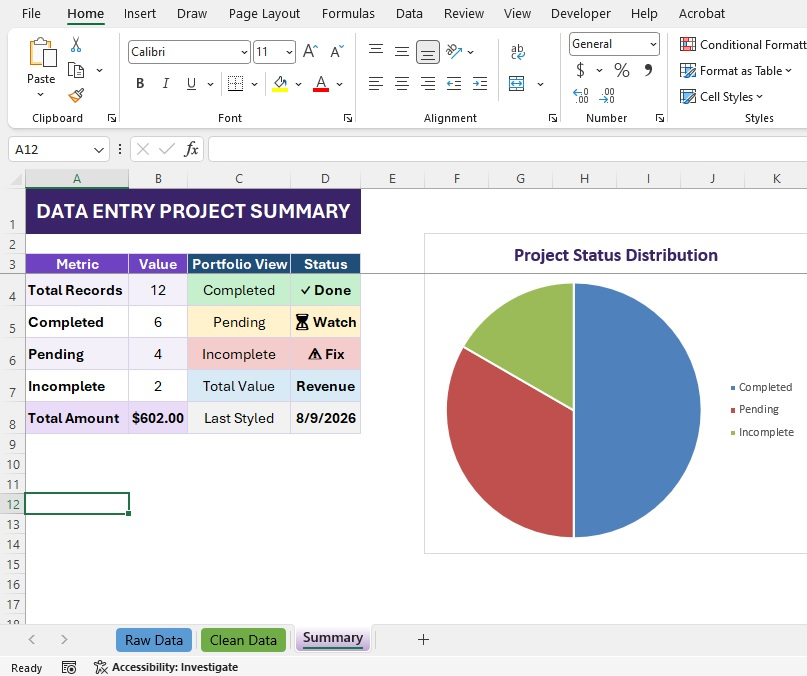

This Data Entry project demonstrates how raw customer information can be entered, organized and maintained in a structured Excel format.
The data was carefully entered and arranged to create a clean, accurate and easy-to-manage spreadsheet for business use.
The customer information was entered accurately and organized into a structured Excel spreadsheet.
The completed spreadsheet makes the information easier to review, search and manage efficiently.
The organized spreadsheet helps businesses save time by making customer information easier to access and manage.
Accurate data entry and clean formatting reduce manual work and help maintain reliable business records.
The structured Excel file provides a professional and practical way to manage customer information efficiently.